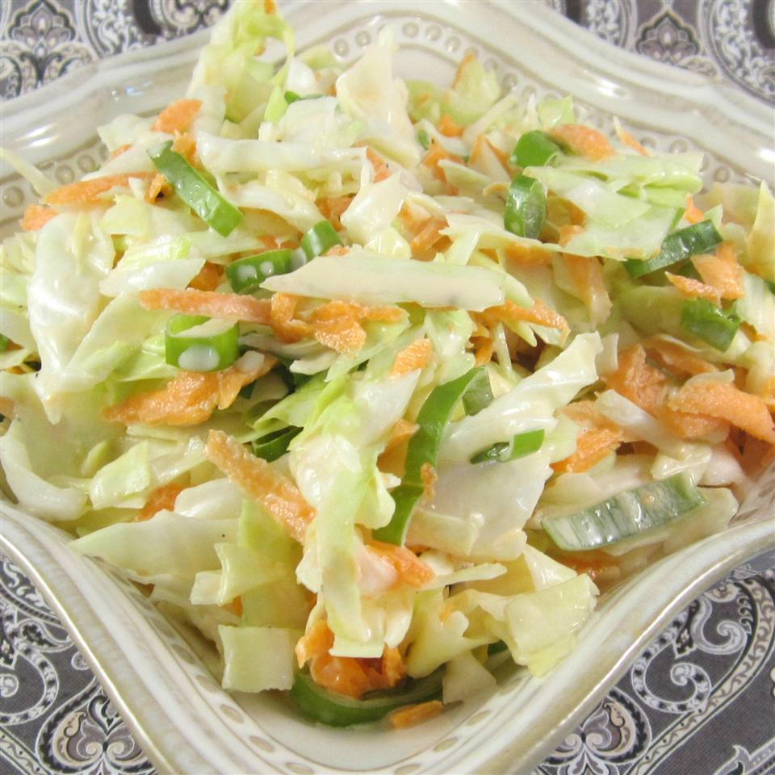

Nana's Southern Coleslaw

Homepage
Description
Just an old family recipe that I have been told is reminiscent of KFC coleslaw. You be the judge! To speed things up I sometimes just buy an already shredded bag of cabbage with carrots in it and then just chop it a little finer.
Ingredients
- 1 head cabbage, finely shredded
- 2 carrots, finely chopped
- 2 tablespoons finely chopped onion
- ½ cup mayonnaise
- ⅓ cup white sugar
- ¼ cup milk
- ¼ cup buttermilk
- 2 tablespoons lemon juice
- 2 tablespoons distilled white vinegar
- ½ teaspoon salt
- ⅛ teaspoon ground black pepper
Steps
- Mix cabbage, carrots, and onion in a large salad bowl. Whisk mayonnaise, sugar, milk, buttermilk, lemon juice, vinegar, salt, and black pepper in a separate bowl until smooth and the sugar has dissolved.
- Pour dressing over cabbage mixture and mix thoroughly. Cover bowl and refrigerate slaw at least 2 hours (the longer the better). Mix again before serving.